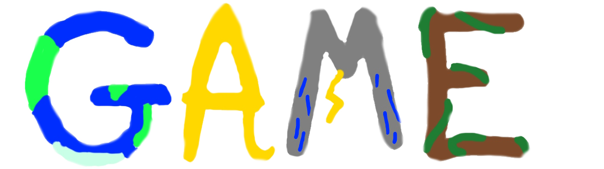

|  | GAMEs |
|---|
|
Games, we all know them and most of us love them. Being born in the modern area, I was always surrounded by games. Most of my free time has been spent watching or playing games, and therefore they had a large effect on me. Through a lifetime of exposure, I became more and more invested in games. I used this passion for games and turned it into a motivating factor for me to do other things as well. Games are a great motivator for me, as they are the most enjoyable part of my life. They push me to learn and create things that I normally wouldn’t without them. Games help me become more invested in GAME. Games can motivate me in many different ways and many different games motivate me. Minecraft is one of the biggest games ever and resulted in my biggest project. There is a regular Minecraft event held most months called MCC. I have watched many MCCs by now and it is a common thing in the community to predict the outcome of the event. I myself want to join in on this, so I spent many hours building a google sheet to help me do this based on the in-game scoring system and player statistics. Up to this day I still update it when needed. This endeavor not only produced my original goal but helped me improve in other ways. The knowledge and practice I gained from using formulas and functions helped me in my Excel class.Games and GAME are probably the two most influential things in my life, it is just a coincidence that they are so similar. GAME stands up geography, academics, meteorology, and environmentalism. These topics are the things that guide and determine my future, from where I go to what I become. I value all of these topics and invested a lot of time and effort into them. I memorized every countries’ name, location, and relative population. I studied and worked hard for straight As’. I know the basics of cyclogenesis. I learned to deeply care for the environment. |
|---|